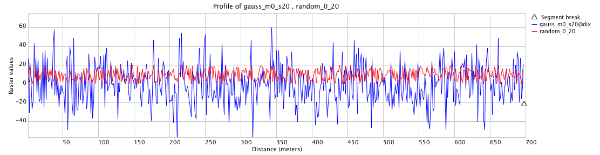
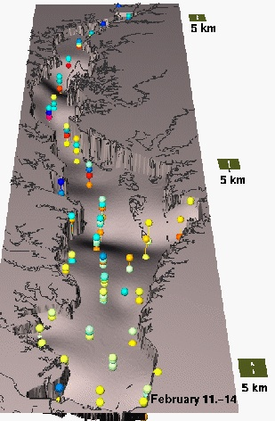
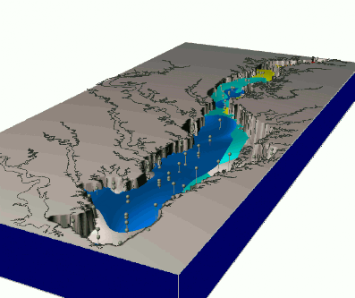
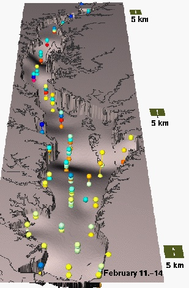
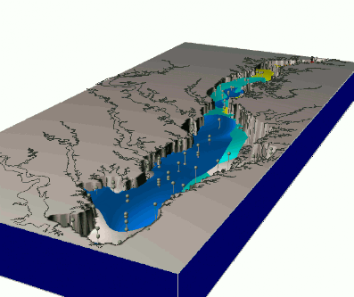

Geometry based spatial methods
Deterministic: mathematical functions
$z = 0.2 x + 0.02 y + 50$

Helena Mitasova, Anna Petrasova, Vaclav Petras
GIS714 Geosimulations NCSU
Deterministic: mathematical functions
$z = 0.2 x + 0.02 y + 50$
Deterministic: mathematical functions
$z = \sin (0.4x) + 0.3 \cos(y) + 80$

Smooth, simplified surface


where $\mu$ is the mean, $\sigma$ is the standard deviation, $\sigma^2$ is the variance, $e$ is exponential function, and $f(z | \mu,\sigma^2)$ is probability density function of the normal distribution
Monte Carlo methods often require generating values that have normal distribution
See also Normal distribution here
One $\sigma$ (68%) of values in the random field are within 2m range of the mean




Gaussian random field with $\mu = 0$m and $\sigma = 0.3$m added to the elevation surface:

How would you test whether the noise on your lidar-based DSM has normal distribution? e.g., compute distribution of deviations computed by the spline function
Initial Gaussian or uniform random field is smoothed based on a given filter
add equations
comparison of random fields and their distributions
assignment
Scale invariant features with infinite detail at all scales - complete computation of fractal is impossible
Deterministic and random fractals
Fractals have non-integer dimension
Learn more about fractals
Self-similar: scaled down and rotated copies of themselves
simple algorithms: particular mappig is repeated in recursive scheme
example from Lubos
link for image from web or generate one yourself

Include random component to simulate natural phenomena
Surfaces with no derivative (infinitely rough ?)
Fractal Brownian motion
algorithms: midpoint displacement method, Fourier filtering method, random cut method

Surface generated by Fourier filtering method d=2.9
Surface generated by Fourier filtering method d=2.01

groundwater pollution over 10 years - data


 



Depends on the research question, available data and tools
Participatory research, planning, decision making
Computational approaches, artificial inteligence, games
Tangible Landscape
Computational design
Structure from motion - digital mapping of 3D objects using overlapping images